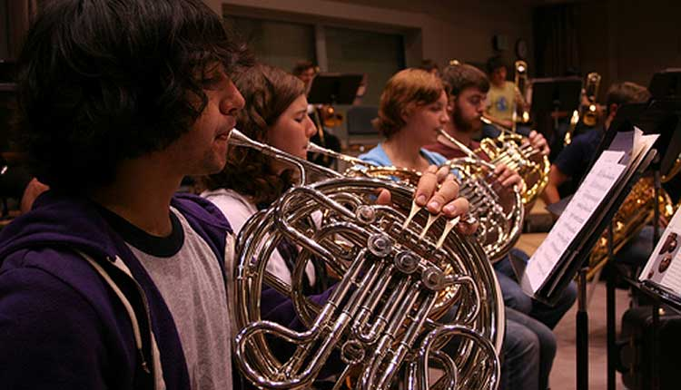

Give some thought to who you want for your French horn players. If you do any kind of screening, look for signs that the potential horn player has at least average ability to discriminate pitches. Can they hum a pitch to match one you give them? Students with some background in piano are usually good choices because their ears are accustomed to hearing accurately played pitches in diatonic harmonies. An added bonus would be recruits who would be able to afford lessons, particularly in the beginning stages. Also take into account physical factors that can ultimately lead to either success or frustration. Are the person’s lips small enough to deal with the relatively small opening and rim width of the French horn mouthpiece? Is the boy or girl tall enough to manage a single horn, or should he or she play cornet or trumpet for a year or two before switching to the French horn? Is the left hand large enough to manage the hand grip? Though an intense desire to learn the instrument can help someone overcome obstacles to learning to play horn, you can “stack the deck” for the success of you and your students if you pay attention and offer guidance around the factors that seem to be important determiners.
Pay attention to the instruments your beginners are using. Whether they’ve checked out a horn from the school or gotten one somewhere else, it’s a good idea to have an experienced brass player play through a major scale on the instrument to see if it speaks easily and if the scale sounds true. What is the horn’s overall condition? While dents and lost lacquer won’t affect the instrument, deep, restrictive dents, loose braces that buzz, valves that are poorly aligned, and 1st and 3rd valve slides that have gotten reversed (the big one goes on the 3rd valve) can make the challenges of learning to play the French horn close to impossible. The partials on single F horns are so close together that playing from 3rd line Bb to the top of the staff can be accomplished, for demonstration purposes, using either all open or all first valve, and it can feel like you’re walking a tightrope. If the horn is stuffy or the valves are out of alignment, young player/tightrope walkers may find playing so difficult that they’ll want to give up. When there are double horns available, have your horn players start playing them as soon as they can manage the heavier instruments, possibly by the second year. They’ll think they’ve gone to heaven when they find out how easily they can play the notes in the upper half of the treble staff, and you’ll love their improved accuracy and confidence.
When they first begin playing, young students may think the intricate tubing of the French horn is interesting to look at, but they may have only a vague idea how it should really sound. When they get their embouchure relaxed enough, their right hand placement correct, and sufficient air passing through the instrument to get the rich, dark sound that is characteristic of the horn, point out how good they sound and encourage them to keep working to produce that kind of tone all the time. If they have trouble understanding how they should sound, play recordings that feature professional players or invite college or advanced high school students to demonstrate for them. If they hope to become successful French horniest, it is essential that they have a well-established tonal concept and understand how difficult it is from the other, brighter-sounding brasses. Though young players may have some initial difficulty with the close spaced partials of the horn’s beginning playing range, they can usually negotiate the three open tones starting with middle C and going up in thirds to E and G. A logical next step is to fill in the 1st valve D and F to produce part of a C scale, then, if your beginning method doesn’t do so, write out simple melodies using the five notes from middle C to second line G. Urge students to concentrate on filling up their instruments with air and developing enough control that they can expand their ranges to higher and lower notes. In addition to teaching normal brass instrument embouchure and air support always give attention to the placement of students’ right hands. The hand should be cupped and the knuckles placed against the bell opposite the player’s body. If the hand is flat and the palm resting against the part of the bell closest to the player’s body, or if the student is gripping the rim of the bell with a thumb and a couple of fingers, the instrument will play a half step sharp and sound like a baritone. When the hand is cupped too much or pushed too far into the bell, the sound will be muffled, the horn will be flat, and notes will be harder to hit accurately. Some beginning methods are difficult for beginners. For example, if your French horns are asked to play the first five notes of the Bb concert scale, a common starting point for the first-year band class methods, these young players are going to be forced to begin either on F below the treble staff, an awkward place to begin producing notes on the instrument, or on first space F, which will mean they will soon find themselves in the part of their harmonic series where the overtones are hard to play accurately on beginner single horns. In either case, attempting to match their first notes with the rest of the band may be so much of an obstacle that your beginners will become discouraged about never being able to hit the right notes. In contrast, playing the C-E-G sequence and the notes between is more secure and within the ability range of the average recruit. If your early concert pieces take the horns out of the C to G range before they’re ready, write them some optional parts within the five-note group and let them play in this secure range until they develop the confidence to play higher or lower. In band methods with dual pages for French horn, one with notes matching the rest of the band and the other that fits the French horns better, you can let the horns play their special pages until they’re confident enough to play the band unison version. If any other students notice that the French horns are playing below everyone else, you can explain that they’re playing a kind of natural harmony and will match pitches with the full band later.
Students on instruments like trumpet, saxophone, or clarinet, may begin producing solid, accurately placed sounds while the French horns are still struggling, not sounding all that good and wondering if they’re ever going to be able to play notes that fit with the band. Explain to them that what they’re going through is perfectly normal and is probably the most difficult part of learning the instrument. Give them the freedom to concentrate on producing a strong, characteristic sound before they worry about matching pitches with the band. Since a weakly supported attack is almost a sure miss, encourage your young horn players to use plenty of air when they attack notes. Tell them that if they’re going to miss, miss big. Praise them when they get it right and you’ll see confidence start to build. Shaking your head and frowning when they miss, and they will, tends to make beginners afraid to try and you won’t see nearly the same results as when you say, “That was amazing,” “Way to go,” “You nailed it,” and so on, when they’re successful.